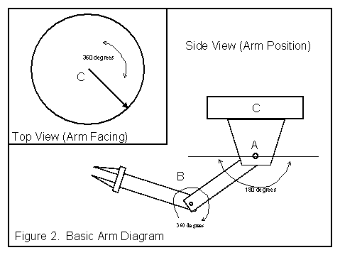

- General Syntax
As the JBOT command parser follows a CPU model, so is its language written in an assembly-style syntax, i.e.:
Command op1 op2 op3 … opn;
This syntax simplifies the parsing process; expressions are already postfixed and need not be rewritten into postfix at interpretation-time.
The semi-colon is necessary for the command parser to find the end of a line, therefore, it must be included for proper functioning. In general, commands and operators are separated by spaces. Finally, in JBOT, all numeric values are explicity integers.
- Variables
In an effort to simplify the parsing of the program, only a finite number of variables are allowed. Inside CommandInterpreter(), all variables are stored in an array V[ ]. When programming, a new variable can be defined simply by typing the letter "V" followed by a number from 0 to 9, i.e., V0, V1, V2, etc. (The number corresponds directly to the array location of that variable.) Note that these are static locations that are always available, so they do not need to be declared. Just use them.
The variable MAX_VAR in CommandInterpreter() specifies the total number of available variables, initially 10. If more are needed, MAX_VAR can be increased and the JBOT program re-compiled.
This variable design hampers readability, but makes the parsing routine much easier, and the script execution faster. Further, this language was designed for short command scripts, so the functionality of user-nameable variables could be considered overkill.
- LABEL Statements
A label is simply a marker for the interpreter to go back and repeat a section of code, or else to skip a section of code by jumping ahead. Otherwise, the label statement does nothing.
A LABEL statement has the following form:
LABEL L<number>;
Like variables in JBOT, all label references are stored in an array. The script programmer would refer to them as L0, L1, L2, etc., up to L24. Thus, if the programmer desires to branch on not true to label 3, he/she could use
BNT L3;
MAX_LABELS in CommandInterpreter() specifies the total number of available labels that can be used, initially 25. If more are needed, MAX_LABELS can be increased and the JBOT program re-compiled.
- The EQ Command
The EQ command tests if its two operands are equal, and sets the status register to "true" or "false" accordingly. Its syntax is:
EQ op1 op2;
Both op1 and op2 may be either a numeric value or a variable.
- The ADD Command
The ADD command takes two operands, adds them, and places the result in the first operand. Its syntax is:
ADD op1 op2;
Op1 must be a variable (programmers take note!), as ADD has to have a place to put the result! Op2 may be either a numeric value or a variable.
- The SENSOR Command
The SENSOR command takes no arguments. Its purpose is to poll the robot arm and determine if an object (perhaps the floor or a token to be grasped) have triggered the sensor at the tip of the claw. The status register is set to "true" if this condition is met, "false" otherwise. The syntax of the SENSOR command is simply:
SENSOR;
- The COPEN and CCLOSE Commands
COPEN and CCLOSE open and close, respectively, the claw of the robot arm by a specified percentage of its total range. The interpreter checks to see if the number specified puts the claw outside its total range (i.e., the resulting claw position must always be between 0 and 99 percent). If the result is less than 0 percent, it is set to 0 percent; likewise, if it is above 99 percent, it is set to 99 percent. The syntax of the COPEN and CCLOSE commands are:
COPEN op1;
CCLOSE op2;
Both op1 and op2 may be either variable or numeric values.
9. The ROTATE Command
The ROTATE command specifies which joints of the arm are to move, and by how much. Its syntax is:
ROTATE Adeg Bdeg Cdeg;
The operands Adeg, Bdeg, and Cdeg specify how far, in integer degrees, each joint is to rotate from its current position. Figure 2 shows the arm and each joint. Each joint is range-checked as follows (see Figure 2):
Joint A: 180 degrees as shown.
Joint B: 360 degrees as shown.
Joint C: 360 degrees as shown.

- The BRT and BNT Commands